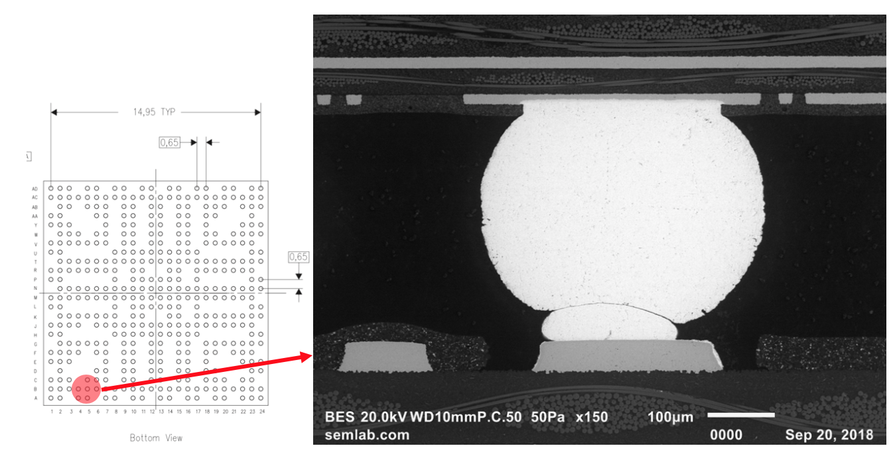
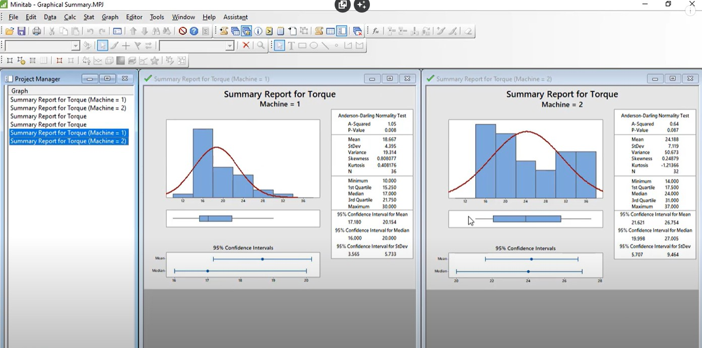
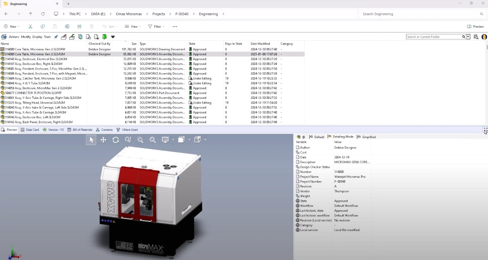
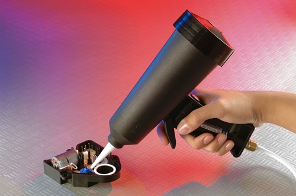
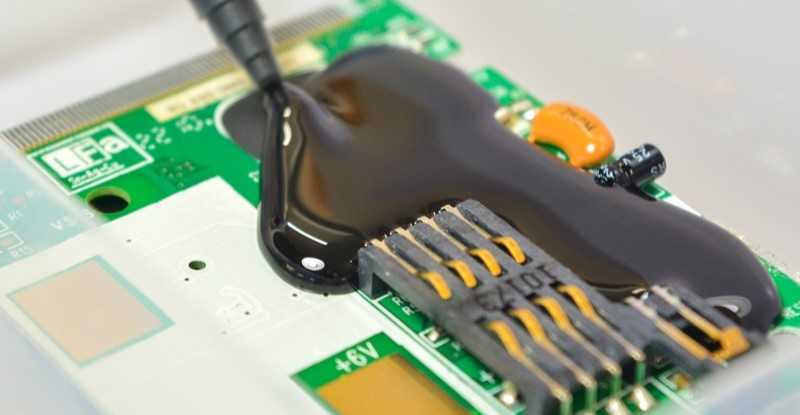
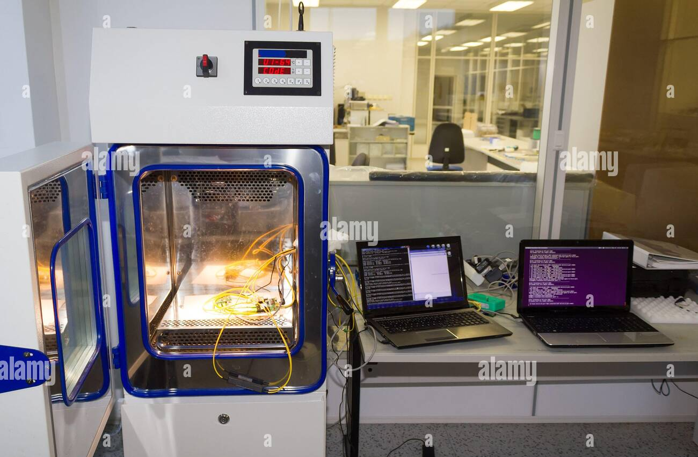

Projects
Manufacturing Engineering Internship @ Mercury Systems
Portfolio
Interning @ Mercury System's Microelectronics Packaging Center in Phoenix
Over nearly two years at Mercury Systems Microelectronics Packaging Center in Phoenix, I supported manufacturing engineering across PCB fabrication, wafer packaging, and failure analysis. I worked continuously across semesters, gaining hands-on experience in cleanroom operations, lab diagnostics, and design software.

Picture: General Printed Circuit Board Fabrication & Packaging Floor, 1st View
Responsibilities as a Manufacturing Engineering Intern
- Supported PCB fabrication and packaging operations
- Assisted wafer packaging development for 200mm and 300mm wafers
- Performed failure analysis using SEM and 3D CT X-ray
- Used Siemens NX, SolidWorks, and Minitab for design and analysis
Projects
- Supported PCB fabrication and packaging operations
- Assisted wafer packaging development for 200mm and 300mm wafers
- Performed failure analysis using SEM and 3D CT X-ray
- Used Siemens NX, SolidWorks, and Minitab for design and analysis
For example, some of the projects I was involved in were to support our cleanroom floor that was dedicated to wafer packaging. The goal was to bring about new business in the form of building end-to-end packaging processes for 200mm [8"] and 300mm [12"] wafers from the ground up. So to be an effective aide to the engineers, I learned how to use all the equipment in our wafer cleanroom. This included dicing saws, plasma clean stations, dispensing equipment, metrology equipment, etc.
test

Picture: PCB Manufacturing Process | Conformal Coating (Left), Conformal Coating Inspection (Right, all three)

Picture: Scanning Electron Microscope Scans of Ball Grid Array Solder Balls

Picture: Coupon Board Inspection under High-powered Microscope

Picture: Sample 3D CT X-ray Scan using efX Software

Picture: PCB Router Setup for Depaneling

Picture: Teledyne LeCroy WavePulser 40iX's Time Domain Reflectometry Software
Mechanical Subsystem Design
H
Recovery, Redundancy, and Contingency Plans
f
Manufacturing and Procurement
I
Verification
I validated designs through CMM inspections, FEA for structural loads, and thermal cycling tests, achieving TRL 7 for mechanical subsystems.
Summary
- Delivered mission-ready designs for a 2030 lunar launch under $300M budget.
- Achieved TRL 7, enabling lunar pit exploration.
- Mastered CAD, FEA, and systems integration.
- Led a top-performing team, enhancing my aerospace expertise.

Picture: General Printed Circuit Board Fabrication & Packaging Floor, 2nd View

Picture: Sample Minitab Work

Picture: Sample SolidWorks Work

Picture: Sample SolidWorks OnePDM Work

Picture: Potting Process for Printed Circuit Board Assemblies

Picture: Potting Process for Printed Circuit Board Assemblies

Picture: Sample Thermal Humidity Testing Chambers for Printed Circuit Board Assemblies